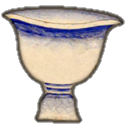

صور الكوكبات السماوية
"صور الكوكبات الشمالية"
الدب الأصغر

الدب الأكبر

التنين

الملتهب

العوّاء

الإكليل الشمالي

الجاثي

السلحفاة

الدجاجة

ذات الكرسي

حامل رأس الغول

ممسك الأعنة

الحوّاء و الحيّة

السهم

العقاب

الدلفين

قطعة الفرس

الفرس الأعظم

المرأة المسلسلة

المثلث

"صور الكوكبات الجنوبية"
قيطس

الجبار

النهر

الأرنب

الكلب الأكبر

الكلب الأصغر

السفينة

الشجاع

الباطية
الغراب

قنطورس و السبع

المجمرة

الإكليل الجنوبي

الحوت الجنوبي

"صور الأبراج الإثني عشر"
الحمل

الثور

التوأمان

السرطان

الأسد

العذراء

الميزان

العقرب

الرامي وهو القوس

الجدي

الدلو و هو ساكب الماء

الحوت


ذِكْر التنين
قال ناظم الأرجوزة أبو علي الحسين بن عبدالرحمن الرازي، ابن الفلكي الشهير عبدالرحمن بن عمر الرازي المشهور بالصوفي:
-
وبعدها كواكب التنينيشرحها ذو منطق رصين
-
وأنجم التنين مثل القلبمحتفة بدائرة القطب
-
أولها نجم خفي النورليس بذي ضوء ولا كبي
-
يعرف بالراقص عند القومو هو على لسان رأس الايم
-
تتبعه كواكب مجتمعةعددهن إن عددن أربعة
-
محتفة بكوكب خفييبصره ذو بصر ذكي
-
يعرف عند العلما بالرُبَعوالرفد فيه أيضاً عنهم سمع
-
وتلكم الاربعة الكبارفقد أتتنا عنهم الأخبار
-
بأنها تزعمها عوايذاو تزعم الرفد بهن عايذا
-
من خوف نجم لقبوه الذيباتراه من موقعه قريبا
-
وزعموه طامعاً في الرُبَعو ليس في استيلائه من طمع
-
لأن تلك الأنجم المضيّةتدفع عنه جهدها البلية
-
والنسر أيضاً عاطف عليهفالذيب غير واصل إليه
-
يتبعها ثلاثة خفيةليست بزهرة ولا مضية
-
كالأقحوان هم بالجفافتعرفها الأعراب بالأثافِ
-
وبعدها نجمان مظلمانكلاهما منها على التداني
-
هما لذيب زعموا أظفاركذاك عنهم جاءت الأخبار
-
و الذيب نجم قد ذكرنا خبرهكأنما الأظفار تقفو أثره
-
وبعد هذا الذيب أيضاً ذيبوجرمه من جرمه قريب
-
قد سمت العرب كلي النجمينفاعلمه بالذيبين والجروين
-
سمتهما الأعراب بالذيبينوقد يسميان بالخربين
-
و العوهقين قد سمعنا أيضاعن كل ذي علم يفيض فيضا
-
يتلوهما نجم كثير النوريضئ للناظر في الديجور
-
يعرف بالذيخ لدى الأعرابتراه بالقرب من الذياب
-
وربما سمّي بالضبعو هو مع الذيبين مغرى بالربع
نجم الراقص
وتتبع نجوم الدب الأكبر، نجوم التنين، وهي نجوم مثل القلب، تلتف حول دائرة القطب. ويتضح في الشكل مدى إلتفاف نجوم التنين حول دائرة القطب.
وأول نجوم التنين نجم غير مضيء ويسمى الراقص، والراقص في اللغة هو البعير إذا أسرع في سيره، وهذا النجم يقع في الصورة على لسان الأيم، والأيم في اللغة الحيّة أو الثعبان، ويقصد بذلك أن نجم الراقص يقع على لسان التنين.

العوائذ و الربع
وبعد نجم الراقص يوجد أربعة نجوم، وفي وسط الأربعة نجوم نجم خفي لايراه إلا حاد البصر. وهذا النجم يسمى الرُبَع، بضم الراء وفتح الباء، والربع هو الفصيل الذي يكون في أول النتاج وذلك في الربيع، وسمي كذلك لأنه إذا مشى ارتبع ووسع خطوه عدواً، وهذا النجم يسمى الرفد أيضاً، ولكن تسمية الرفد لم ترد في كتاب صور الكواكب. وللعرب في هذه النجوم تخيل جميل، فهناك نجم خافت ضعيف تخيله العرب رُبَعاً، وهو ولد الناقة الصغير، ويحتمي هذا الرُبَع بالنجوم الأربع المضيئة حوله وهي تمثل أربعاً من النوق تسميها العرب العوائذ، حيث تحيط به وتدفع عنه شر الذئب الذي يمثله نجم قريب منه، وهذا الذئب يطمع في الإستيلاء على الربع الصغير، لكن ليس له من سبيل إليه لإن النوق تبذل كل جهدها لتحميه بالإضافة إلى أن نجم النسر الواقع الذي هو بالقرب من هذا الربع يحامي عليه، فلن يصل إليه الذئب أبدا.

تأمل نجوم العوائذ الأربعة وإحاطتها بالربع، والنسر الواقع في جهة منه والذئبان في الجهة الأخرى

الأثافي
ويتبع العوائذ والربع ثلاثة نجوم على شكل مثلث تسميها العرب الأثافي تشبيها لها بأثافي القدر وهي ثلاث من الحجارة تنصب ويوضع القدر عليها. والأثافي نجوم خافتة غير مضيئة مثل الأقحوان إذا جف وذهب بياضه.
الأظفار و الذئبان
ثم يتبع هذه النجوم نجمان خافتان تسميهما العرب الأظفار، وهي أظفار الذئب. ثم يتبع الأظفار نجم مضيء تسميه العرب الذئب، وقد ذكرنا قصته مع الربع والعوائذ والنسر الواقع.
ويتبع هذا الذئب نجم آخر قريب من لمعانه ويسمى الأثنان معاً الذئبان. كما يسمى هذين النجمين أيضاً بالحرّين، مثنى حر وهو الصقر وأما الجروين المذكورة في الأرجوزة فلعلها تصحيف الحرين. والبيت الذي يليه هو من مخطوطة أخرى وفيه أن هذين النجمين يسميان الخربين، والخرب هو ذكر الحبارى. وربما هنا كان الخربين تصحيفاً من الحرين. كما سُمِع أن هذين النجمين يسميان العوهقان، والعوهق الخطاف الجبلي الأسود وله معاني أخرى أيضاً. يقول المرزوقي عن هذين النجمين "وبالقرب من الفرقدين كوكبان مقترنان ... إذا اعترض الفرقدان انتصبا وإذا انتصب الفرقدان اعترضا، يسميها العرب الحرّين ويسميان أيضاً الذئبين، ويسميان أيضاً العوهقين." والمعنى أنه إذا رايت الفرقدين بالطول فإن الذئبين يكونان بالعرض، والعكس صحيح.

الذئبان أو العوهقان معترضان والفرقدان منتصبان

الذئبان منتصبان والفرقدان معترضان
الذيخ
ثم يتلو الذئبين نجم مضيء يسمى الذيخ، والذيخ هو ذكر الضباع. وربما سمي هذا النجم بالضبع، وهو مثل الذئبين يطمع في الاستيلاء على الربع.
الحيّة
لم يذكر ابن الصوفي نجوم الحيَّة في الأرجوزة، والسبب أن والده في كتابه ذكر أن من نقل عن العرب أن هناك كواكب يقال لها الحيّة قد وهم وأنه جعل التنين هو الحيَّة، والحيَّة ورد ذكرها عند ابن قتيبة. قال: وفيما بين الفرقدين وبنات نعش كواكب يقال لها الحيَّة، ورأس الحيَّة مثل رأس الخلخال. وربما كانت نجوم الحية هي آخر نجوم التنين وربما كانت كما في الشكل التالي، والأمر غير واضح:

اختبر معلوماتك
والآن إليك هذه الصورة وحاول أن تتعرف على نجوم التنين فيها وتطبق مقولة العرب عن الذئبين "إذا اعترض الفرقدان انتصبا وإذا انتصب الفرقدان اعترضا، "

- الدب الأكبر
إعداد قتيبة أقرع
- الملتهب